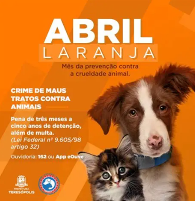
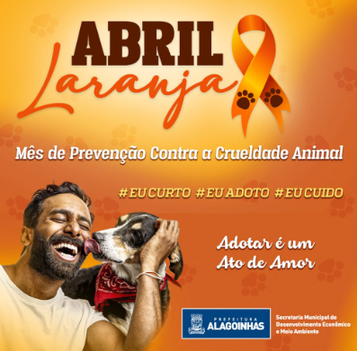

- Durante o Abril Laranja, diversas campanhas são realizadas com o objetivo de combater os maus-tratos aos animais e promover a conscientização da população. Essas campanhas buscam informar as pessoas sobre a importância do respeito aos animais e incentivar atitudes responsáveis no dia a dia.
- Uma das principais ações é a divulgação de informações nas redes sociais, escolas e eventos, mostrando como identificar situações de maus-tratos e como denunciá-las. Isso ajuda a aumentar o número de pessoas conscientes e dispostas a agir em defesa dos animais.
- Além disso, campanhas de adoção responsável são muito comuns nesse período, incentivando as pessoas a adotarem animais abandonados em vez de comprá-los. Essas ações ajudam a reduzir o número de animais nas ruas e em abrigos.
- Também são promovidas campanhas educativas que ensinam sobre os cuidados básicos com os animais, como alimentação adequada, vacinação e visitas ao veterinário.

|
- Diversas organizações e grupos voluntários realizam eventos como feiras de adoção, palestras e campanhas de arrecadação de ração e medicamentos. Essas iniciativas ajudam diretamente animais em situação de vulnerabilidade.
- As campanhas também incentivam a denúncia de maus-tratos, orientando a população sobre como agir e quais órgãos procurar. Isso contribui para que mais casos sejam investigados e punidos.
- Outra ação importante é o trabalho de ONGs que resgatam animais abandonados e oferecem abrigo, cuidados e a chance de um novo lar. Esse trabalho é essencial para diminuir o sofrimento animal.
- Portanto, as campanhas do Abril Laranja têm um papel fundamental na transformação da sociedade, promovendo mais empatia, responsabilidade e respeito pelos animais.

|